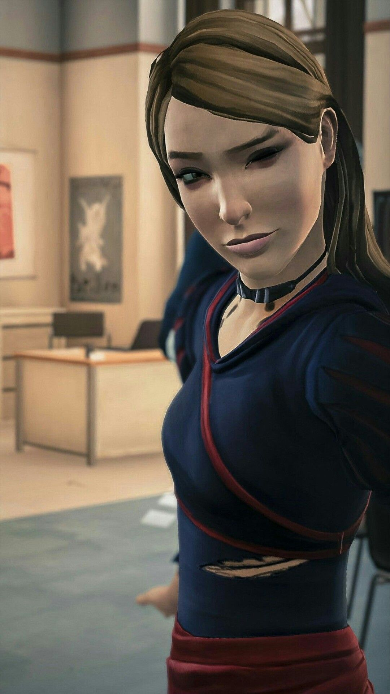
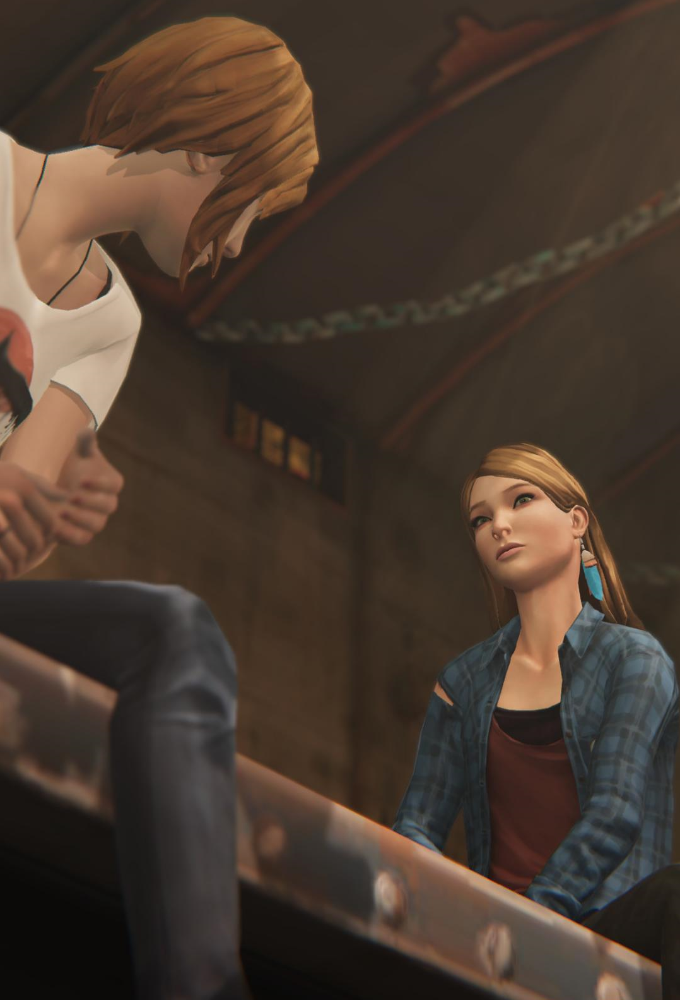

Rachel Amber
The Blue JayRachel Dawn Amber serves as a major character in Life is Strange and as the deuteragonist of Before the Storm. Based on the information found in Arcadia Bay, Rachel was a popular student who attended Blackwell Academy. She and Chloe Price were both close and dreamed of leaving Arcadia Bay together. However, she suddenly went missing on Monday, April 22, 2013 with little to no information about her whereabouts.
Nicknames: Rach, Princess, Little Miss Sunshine, Little Red Riding Hood.
Like Max Caulfield, Rachel has an eye for images and art. Considering school performance in the effort put into being a model, she is a very ambitious person. She appears to have a caring personality, as she is well-loved by those close to her.
Rachel also seems to have been more girly and idealistic than Chloe, reflected by her love of makeup and aspirations to become a model. Rachel is friendly, outgoing and good with people - traits that catch the attention of her peers and teachers, resulting in her popularity at school.
"Life needs a little mystery, Chloe."
- Full Name:
Rachel Dawn Amber - Age: 27
- Born: July 22, 1994
- Hometown: Long Beach, California
- Gender: Female
- Height: 5'5" (1.67m)
She wears denim shorts over torn-up black leggings, black fingerless gloves, and black boots. She has a black belt with a silver belt buckle depicting a hand showing the middle finger, overlapping another black belt with studs on it; she also has a chain hanging from a hoop clipped onto her shorts.
She wears a single blue feathered earring on her left ear with a golden pheasant tippet at the top. On her left hand, Rachel wears a black bracelet with a blue strip down the middle of it, and on her right hand she wears a thin black bracelet and her classic bracelet, a thick, brown-braided leather bracelet with silver-blue objects stuck on.